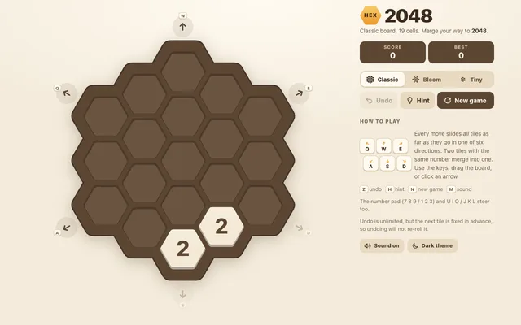
Opus 5.5 · max
Hex 2048, highest effort.
Small projects built with different models and settings. Most are a single static page.
Same prompt, different models and effort levels.

Hex 2048, highest effort.
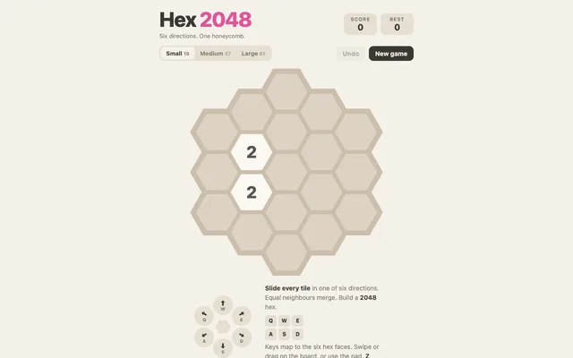
Hex 2048.
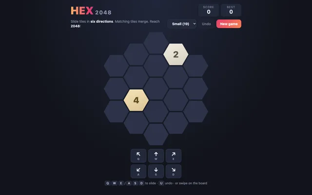
Hex 2048.
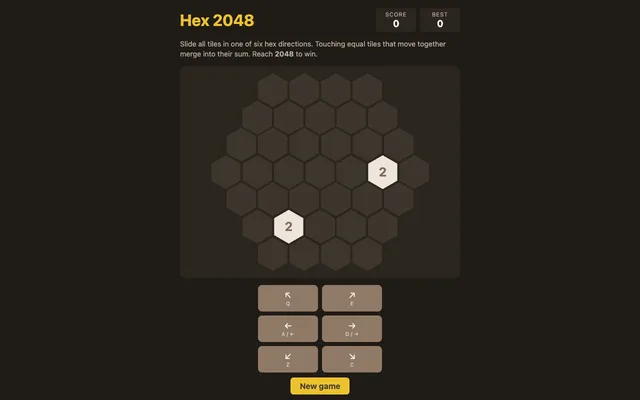
Hex 2048.
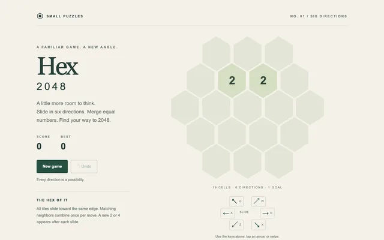
Hex / 2048.
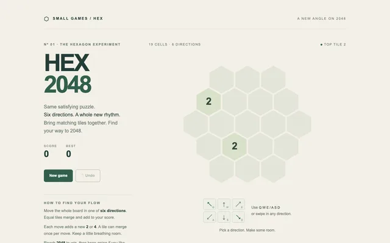
HEX / 2048.
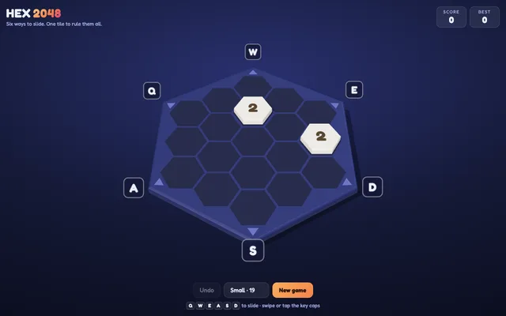
Hexagonal board rendered with Three.js.
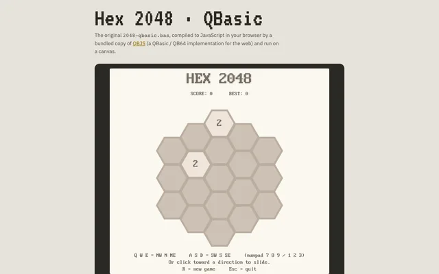
The .bas file compiled and run in the browser by a bundled copy of QBJS.
prompt · .bas source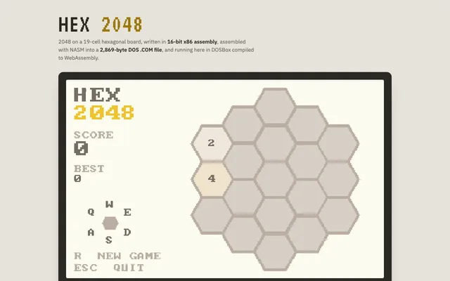
A 2.8 KB DOS .COM in VGA mode 13h, running in DOSBox (js-dos).
prompt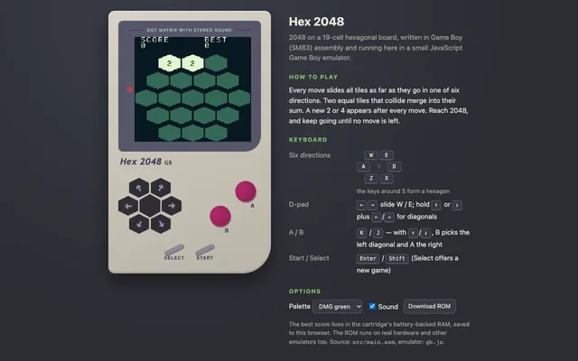
A 32 KB Game Boy ROM in SM83 assembly, running in a small hand-written JS emulator.
prompt · .gb ROM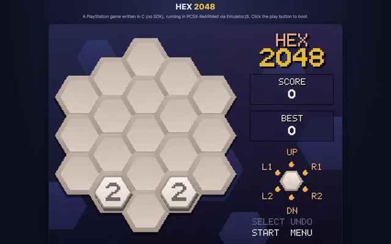
An 18 KB PS-EXE in bare-metal C (no SDK), running in PCSX-ReARMed via EmulatorJS.
prompt · .exe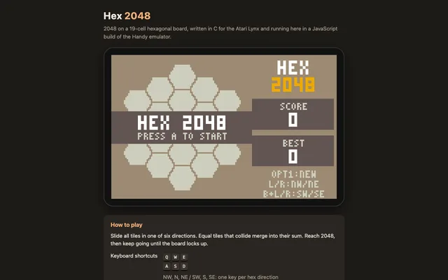
A 9 KB Lynx cart in cc65 C, drawn by Suzy hardware sprites, running in Handy via EmulatorJS.
prompt · .lnx ROM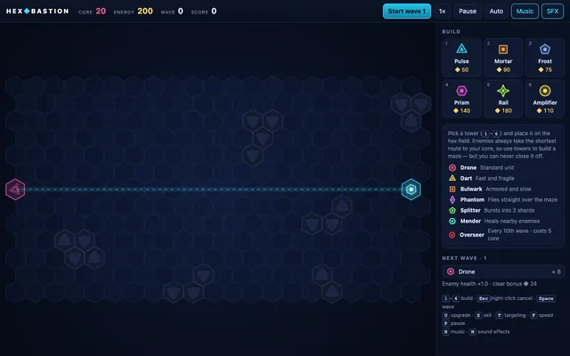
Tower defense on a hex grid.
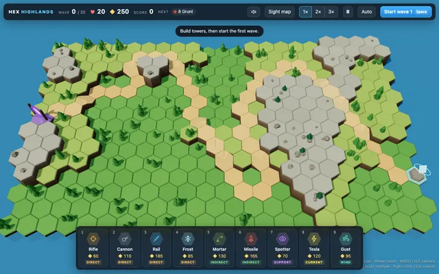
3D tower defense on a hex grid.
prompt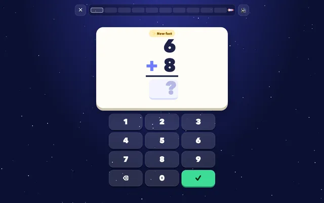
Fly a rocket by answering math facts.
prompt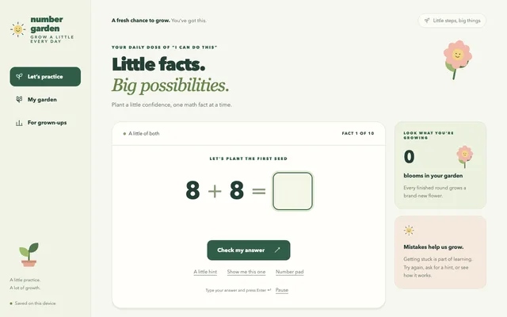
A little practice, a lot of growth. Addition and subtraction rounds.
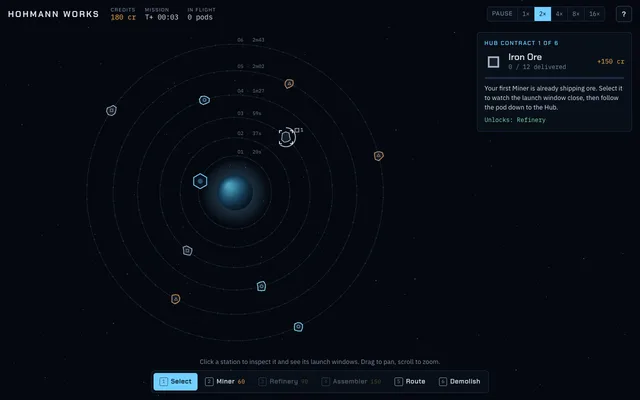
Orbital logistics: build stations and orbits.
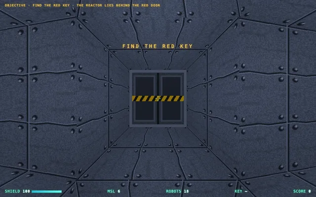
6DOF tunnel shooter in a mine built from deformed cubes. Three.js.
prompt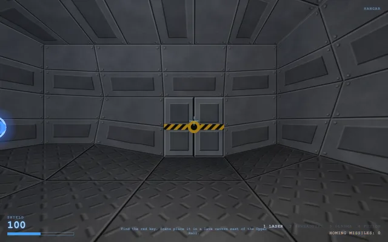
6DOF mine run: red key, lava cavern, reactor, escape timer and an automap. Three.js.
promptUI prototypes for a churches of Christ worship planner.
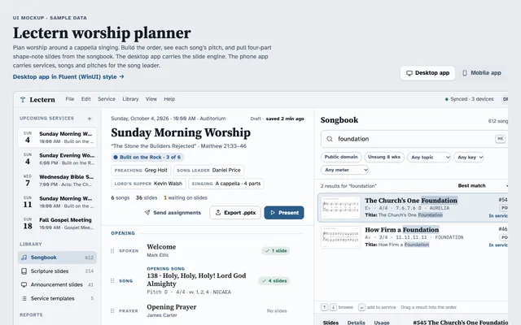
Original planner.
Fluent variant · prompt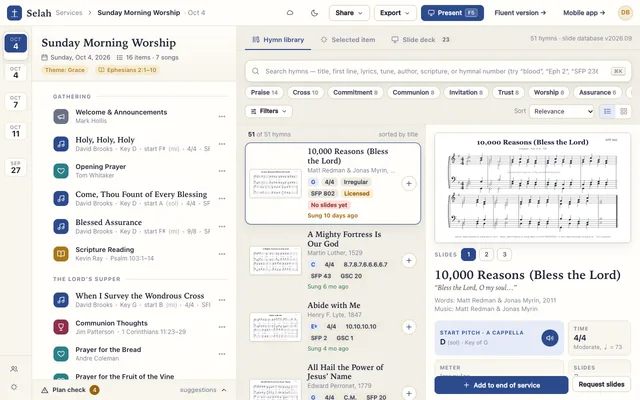
Desktop mockup, Sonnet 5.5.
Mobile · Fluent variant · prompt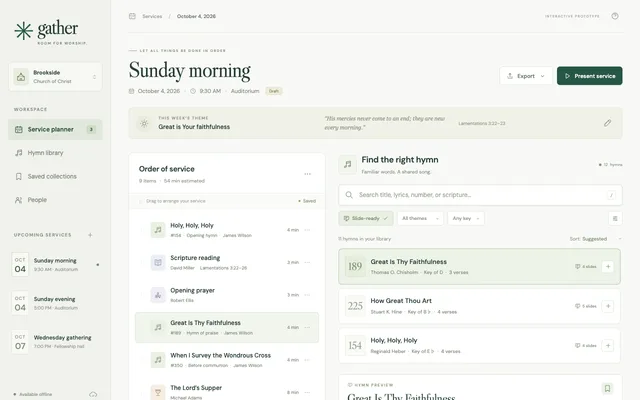
Astra 6 prototype.
Fluent variant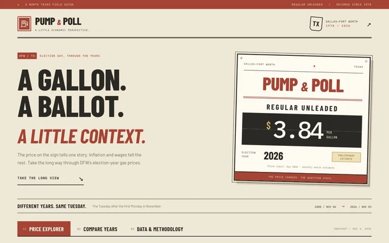
DFW election-year gas prices, inflation adjustments, and wage-based affordability. GPT 6.1 Sol · xhigh.
prompt · hosted Site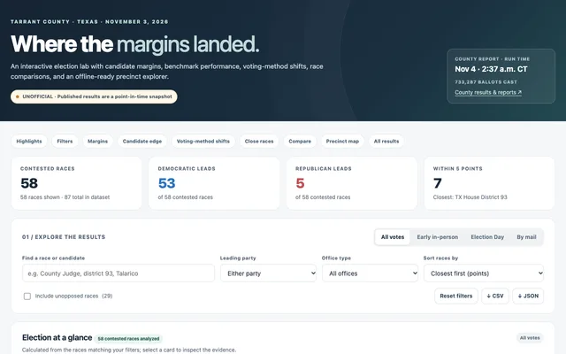
Election results, vote breakdowns, margin charts, and a precinct map.
Python projects; see the README for how to run.
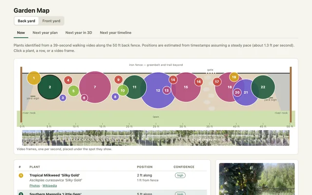
Plants identified from a walking video of a 50 ft back yard bed, placed on a top-down map.
prompt